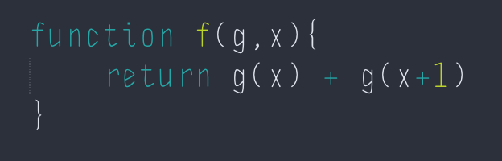
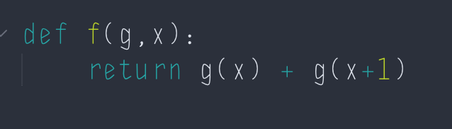
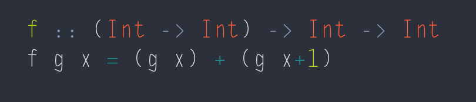
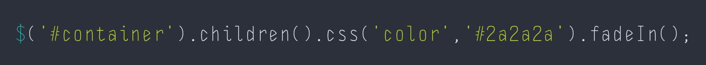
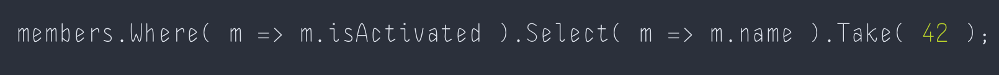
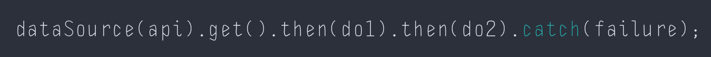

Haskell, the most well-known purely functional language
If we split the world into two equal sides, functional and OOP. Haskell is clearly placed in the farthest side of the functional half. The language itself was designed to be a super purely functional which exposes the strong thinking in functional. People can't keep their OOP or imperative mindset to write the code in Haskell. The language does not allow anyone to write impure code.
Function as first-class citizen
Many widely-used programming languages treat functions as first-class citizen even though they are not 100% precisely functional programming language. Let's implement the function F as mathematically expressed as follows:
f(x): N ↦ N
x ↦ g(x)+g(x+1)
Try it in JavaScript, we may write:

Or in Python, we may do it similarly:

In Haskell, the expression looks similar to math:

Haskell code expresses it so Math, right? :)
Function-first-class is a very useful feature in many languages. Developers are allowed to pass in functions as arguments so the function implementation is kept pure, still :)
Function composition in programming
Like above, many times developers find themselves in a position where they need to write a function which takes an output of another function as its input. This is so-called function composition in Mathematical sense.
For instance, say we have a finite list of data. And we want to sequentially process it through a series of functions. Many languages (or libraries) have implementations in their own fashion. See below:
jQuery : Chain of functions

jQuery utilizes fluent interface which pushes data through a sequence of operations, like a function composition.
.NET's LINQ: Chain of functions

LINQ is a neat design of Monad in .NET. Every single LINQ operation takes an arbitary data, process it and returns a wrapped data for a subsequent operation. This is so glorious.
ECMAScript6's promise: Through the pipeline

Haskell
Well, hey! Still better way in Haskell